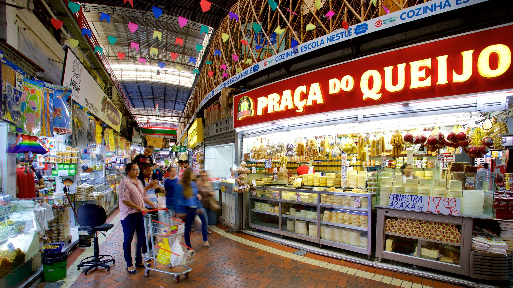

Mercado Central de Belo Horizonte – Tradição, Cultura e Sabores de Minas
Localizado no coração de Belo Horizonte, o Mercado Central é um dos espaços mais emblemáticos da capital mineira. Com quase um século de história, o local reúne cultura, gastronomia e tradição em um ambiente vibrante e acolhedor, onde moradores e turistas encontram de tudo um pouco. Entre corredores estreitos e cheios de vida, o mercado oferece uma experiência sensorial única, misturando aromas, cores e sabores que representam a essência de Minas Gerais.
Com mais de 400 lojas, o Mercado Central é um verdadeiro paraíso para quem busca produtos típicos mineiros. Queijos artesanais premiados, doces caseiros, cachaças envelhecidas e cafés especiais são apenas algumas das delícias que encantam os visitantes. Bancas repletas de temperos, ervas medicinais e quitandas caseiras completam o cenário, convidando todos a provar e levar um pedacinho de Minas para casa. Os bares do mercado, famosos por seus petiscos e pelo icônico fígado com jiló, são pontos de encontro animados, onde a boa conversa e o sabor se misturam em uma experiência tipicamente belo-horizontina.
Além da gastronomia, o Mercado Central abriga uma diversidade impressionante de produtos. Artesanatos regionais, cerâmicas, artigos religiosos e objetos de decoração dividem espaço com bancas de flores, ervas e até animais de estimação, mantendo a atmosfera tradicional do mercado. O local também é um importante ponto de encontro para artistas, turistas e apaixonados pela cultura mineira, sendo um símbolo vivo da identidade de Belo Horizonte.
Mais do que um centro de compras, o Mercado Central é um pedaço da história da cidade, onde tradição e modernidade convivem em perfeita harmonia. Seja para degustar um bom queijo, tomar uma cerveja gelada ou simplesmente passear entre suas lojas cheias de história, o mercado é um lugar obrigatório para quem deseja conhecer a verdadeira alma de Minas Gerais.
